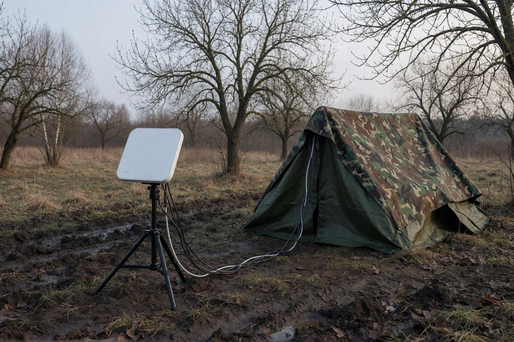

Geopolitica · 16 novembre 2026
Ucraina, il limite a Starshield frena i droni intercettori

Sopra i 161 chilometri all'ora i terminali satellitari perdono il collegamento, e i droni che inseguono quelli russi restano indietro. Zelensky chiede all'America di togliere il freno; nessuno rivendica la decisione.
di Franco Zanghì
I droni ucraini che danno la caccia ai droni russi perdono il segnale a 161 chilometri all'ora. Volodymyr Zelensky ha detto che la rete satellitare americana, decisiva al fronte, funziona ancora troppo lentamente, e che così l'Ucraina fa più fatica a fermare gli attacchi russi. «Contiamo sulla revoca di queste restrizioni», ha dichiarato: dalla rete, ha aggiunto, dipende la difesa delle vite e delle centrali elettriche, prima dell'inverno. Lo riferiscono la BBC e Al Jazeera.
Di che cosa si tratta
Starlink è la rete di satelliti di SpaceX; Starshield è la sua versione militare, quella che l'Ucraina usa per guidare i droni intercettori. Secondo Kiev, sopra i 161 chilometri all'ora i terminali perdono il collegamento. Il limite è comparso a metà ottobre, è stato tolto il 24 ottobre ed è tornato lunedì 9 novembre, scrive Politico.
Perché pesa così tanto
Perché la Russia ora lancia anche droni a reazione, i Geran, nati da un modello iraniano e molto più veloci di quelli a elica. A settembre l'aeronautica ucraina diceva di abbatterne circa il 60 per cento, contro oltre il 90 per cento dei droni a elica, riporta Al Jazeera. Domenica 15 novembre Zelensky ha scritto che molti attacchi passano proprio per colpa di quel limite: quella notte, a Odessa, un impianto energetico è stato colpito e 41.000 famiglie sono rimaste senza corrente.
Chi ha deciso il limite
Nessuno lo rivendica. Elon Musk, padrone di SpaceX, a ottobre ha scritto che i sistemi Starshield sono del governo americano e che i limiti li decidono le forze armate degli Stati Uniti e, alla fine, il presidente. Donald Trump ha detto che Musk aveva ridato l'accesso a Kiev e ha negato qualsiasi ruolo della Casa Bianca; l'azienda, nelle ricostruzioni delle testate internazionali, ha smentito di aver introdotto nuove restrizioni. Intanto, ricorda Al Jazeera, Washington e Kiev sono ai ferri corti sugli attacchi ucraini alle raffinerie russe, che secondo Trump fanno salire i prezzi del petrolio. E Zelensky, al Financial Times, è stato netto: non era un problema tecnico, era una volontà precisa.
Il punto
In questa guerra la velocità di un drone ucraino si decide in America, e ogni volta che fra Washington e Kiev sale la tensione il cielo ucraino diventa meno sicuro. Il passaggio da guardare è l'inverno: se il limite cadrà prima del grande freddo, gli intercettori torneranno a inseguire i droni a reazione; se resterà, le centrali ucraine saranno più esposte. E l'Europa, Italia compresa, ha un motivo in più per chiedersi da chi dipende il suo cielo.
Fonti
- BBC, le dichiarazioni di Zelensky sulle restrizioni alla rete satellitare, 16 novembre 2026
- Al Jazeera, «Why Starshield limits are hurting Ukraine against jet-powered drones», 16 novembre 2026
- Politico, il ritorno del limite di velocità il 9 novembre 2026, 13 novembre 2026
- Euronews, la denuncia di Zelensky e la smentita dell'azienda, 12 novembre 2026
- Financial Times, l'intervista a Zelensky ripresa da Al Jazeera, novembre 2026
Alla data di pubblicazione il limite di velocità non era stato revocato e nessuna delle parti ne aveva rivendicato la decisione.